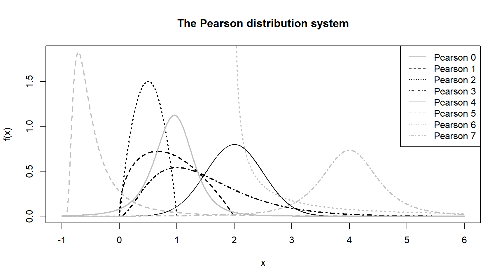
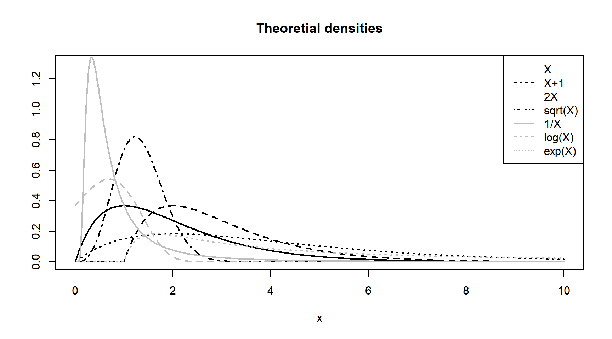

Principais distribuições estatísticas para Atuária
Distribuições contínuas
Distribuições discretas
Distribuições mistas
04 de abril de 2018
Aula de Hoje
Variáveis Aleatórias
Variáveis Aleatórias
Temos interesse em medir quantias incertas, que podem ser representadas por variáveis aleatórias.
Variáveis aleatórias são uma representação matemática de eventos incertos.
Para isso, precisamos definir o suporte (valores que pode assumir) e a distribuição de probabilidade (probabilidades associadas) da nossa variável aleatória.
Variáveis Aleatórias
Modelos atuariais dependem de suposições sobre a distribuição de probabilidade da variável aleatória de interesse.
Por exemplo, se \(X\) é uma v.a. do valor de uma indenização ou tempo de vida futuro, esperamos que sua distribuição de probabilidade esteja definida em \(\mathbb{R}_{+}\). Ou se \(X\) representa o número de indenizações, sua distribuição estará definida em \(\mathbb{N}\).
Variáveis Aleatórias
Além do suporte em que a v.a. \(X\) está definida, precisamos determinar a distribuição de probabilidade.
- Variáveis discretas: a distribuição de probabilidade é caracterizada pela função de probabilidade \(p_X(x) = \mathbb{P}(X=x)\) para \(x \in \mathbb{N}\).
- Variáveis contínuas: a disttribuição de probabilidade é definida pela função de densidade \(f_X(x)\) (versão infinitesimal de \(p_X\), tal que \(f_X(x)dx=\mathbb{P}(X \in [x,x+dx])\)).
- Variáveis mistas: a variável tem partes contínua e discreta. Definimos a variável aleatória com a função de distribuição acumulada \(F_X(x) = \mathbb{P}(X \leq x)\).
Variáveis Aleatórias
- Para variáveis discretas, a função de distribuição é: \[F_X(x) = \sum_{n=0}^{\lfloor x \rfloor} p_X(n) \]
- Para variáveis contínuas, a função de distribuição é: \[F_X(x) = \int_{-\infty}^x f_X(y)\, dy \]
Variáveis Aleatórias
Vamos ver agora as principais distribuições de probabilidade para aplicações em atuária.
- contínuas, discretas, mistas.
Distribuições contínuas
Distribuições contínuas
Há várias maneiras de se classificar distribuições de probabilidade.
Sistema de Pearson: considere a família de distribuições de probabilidade tal que a densidade satisfaça a seguinte condição (equação diferencial):
\[\frac{1}{f_X(x)} \frac{d \, f_X(x)}{dx} = - \frac{a+x}{c_0 + c_1 x + c_2 x^2} \] onde \(a\), \(c_0\), \(c_1\) e \(c_2\) são constantes.
- A solução da equação diferencial está definida até a constante \(K\) que pode ser encontrada pela restrição \(\int_{\mathbb{R}} f_X(x)\, dx = 1\).
Distribuições contínuas
- Pearson Tipo 0 é obtida quando \(c_1=c_2=0\).
\[f_X(x) = K.\, e^{-(2a+x)x/(2.\,c_0)} \] que é conhecida como distribuição Normal.
Distribuições contínuas
- Pearson Tipo 1 é obtida quando \(c_0 + c_1 x + c_2 x^2\) tem duas raízes reais \(a_1\) e \(a_2\) tal que \(a_1 < 0 < a_2\).
\[f_X(x) = K.\,(x-a_1)^{m_1}.\, (a_2-x)^{m_2} \] que é conhecida como distribuição Beta.
- Pearson Tipo 2 corresponde ao caso em que \(m+1=m_2=m\).
Distribuições contínuas
- Pearson Tipo 3 é obtida quando \(c_2 = 0\).
\[f_X(x) = K.\,(c_0 + c_1 x)^m .\, e^{x+c_1} \] que é conhecida como distribuição Gama.
Distribuições contínuas de Pearson

Distribuições contínuas
- Outra classe importante de distribuições de probabilidade contínuas é a família exponencial, onde a densidade pode ser escrita como:
\[f_X(x) = \exp \left( \sum_{j=1}^d a_j(x).\, \alpha_j(\boldsymbol \theta) + b(x) + \beta(\boldsymbol \theta)\right) \]
onde \(\boldsymbol{\theta} \in \mathbb{R}^d\) é o vetor de parâmetros, e \(a_j\), \(\alpha_j\), \(b\) e \(\beta\) são funções conhecidas.
Distribuições contínuas
Várias distribuições conhecidas pertencem à família exponencial:
- distribuição exponencial:
\[f_X(x) = \lambda \, e^{-\lambda x} \] com \(d=1\), \(a(x)=x\), \(\alpha(x)=\lambda\), \(b(x)=0\) e \(\beta(\lambda)=\log(\lambda)\).
- distribuição normal:
\[f_X(x) = e^{-(x-\mu)^2/(2 \sigma^2)}/\sqrt{2 \pi \sigma^2} \] com \(d=2\), \(a_1(x)=x^2\), \(\alpha_1(\mu,\sigma^2)=-1/(2\sigma^2)\), \(a_2(x)=x\), \(\alpha_2(\mu,\sigma^2)=\mu/\sigma^2\), \(b(x)=0\) e \(\beta(\mu,\sigma^2)=-\mu^2/(2\sigma^2)-\log(\sqrt{2\pi \sigma^2})\).
- outras distribuições de interesse para atuária: gama, normal inversa.
Distribuições de probabilidade no R
No R, cada distribuição de probabilidade é implementada por um conjunto de quatro funções e um “nome raiz”
foo:dfoocomputa a função de densidade \(f_X(x)\) ou função de probabilidade \(p_X(x)\);pfoocomputa a função de distribuição acumulada \(F_X(x)\);qfoocomputa o quantil \(F_X^{-1}(x)\);e
rfooé a função para gerar números aleatórios de acordo com a distribuição de probabilidade.
Distribuições contínuas no R

Distribuições contínuas no R
- Lista completa de distribuições em outros pacotes:
https://cran.r-project.org/web/views/Distributions.html
- Entre os diversos pacotes,
actuareActuDistnsfocam em distribuições relevantes para ciências atuariais.
O pacote actuar calcula os momentos \(\mathbb{E}(X^k)\) (função mfoo), valor esperado limitado \(\mathbb{E}(\min(X,l)^k)\) (função levfoo), e a função geradora de momentos \(\mathbb{E}(e^{tX})\) (função mgffoo) para diversas distribuições de probabilidade.
Transformações
Em alguns casos, pode ser necessário transformar a distribuição de probabilidade de \(X\):
- translação \(X+c\);
- mudança de escala \(\lambda X\);
- potência \(X^{\alpha}\);
- inverso \(1/X\);
- logaritmo \(\log(X)\);
- exponencial \(\exp(X)\);
- razão de chances \(X / (1-X)\).
Transformações
- Para encontrar as densidades das variáveis após alguma transformação:
\[f_Y(y) = \left| \frac{d}{dy} \left( g^{-1}(y) \right) \right| \cdot f_X\left( g^{-1}(y) \right)\] onde \(Y = g(Y)\) e \(g\) é uma transformação monótona.
Transformações de \(X\sim Gama(2,1)\)

Distribuições contínuas
- Distribuição Uniforme: distribuição contínua com suporte finito.
\[f_X(x) = \mathbb{1}_{[0,1]}(x) \]
É usada para gerar amostra de outras distribuições de probabilidade (se \(U\sim Unif(0,1)\), \(Y = F_X(U)^{-1}\) tem distribuição \(F_X\)).
No R: ?dunif
Distribuições contínuas
- Distribuição Beta:
\[f_X(x) = \frac{x^{a-1}(1-x)^{b-1}}{\beta(a,b)} \cdot \mathbb{1}_{[0,1]}(x) \] \[F_X(x) = \frac{\beta(a,b,x)}{a,b} \]
onde \(\beta(.,.)\) é a função beta, e \(\beta(.,.,.)\) é a função beta incompleta.
Caso especial: quando \(a=b=1\), temos a distribuição uniforme.
Quando \(a,b<1\), a densidade tem formato de “U”; quando \(a,b>1\), a densidade é unimodal; outros formatos no link.
No R:
?dbeta
Distribuições contínuas
Família Gama: família de transformações da distribuição gama, com valores contínuos positivos.
Seja \(X \sim Gama(\alpha, 1)\). A transformação da família gama é dada por \(Y=X^{1/\tau}/\lambda\) com \(\tau>0\).
\[f_Y(y) = \frac{\lambda^{\tau \alpha}}{\Gamma(\alpha)} \tau \, y^{\alpha \tau - 1} e^{-(\lambda y)^\tau} \] \[F_Y(y) = \Gamma(\alpha, (\lambda y)^\tau)/\Gamma(\alpha)\] onde \(\Gamma(.,.)\) denota a função gama incompleta.
- Quando \(\tau<0\), temos a família gama inversa.
Distribuições contínuas

Distribuições contínuas
- Pareto: distribuição de cauda pesada com parâmetros \((\alpha, \theta)\).
\[f_X(x) = \frac{\alpha}{\theta} \left( \frac{\theta}{\theta+x} \right)^{\alpha+1} \] para \(x, \alpha, \theta>0\).
Distribuições discretas
Distribuições discretas
- Família Sundt (a, b, 0): distribuições que satisfazem a relação:
\[\frac{\mathbb{P}(X=k+1)}{\mathbb{P}(X=k)} = a + \frac{b}{k} \] para \(k \in \mathbb{N}\) e \(a,b \geq 0\).
- Essa relação recursiva pode ser vista como uma simplificação discreta do sistema de Pearson.
Distribuições discretas
Distribuição Binomial: quando \(a=-p/(1-p)\) e \(b=p(n+1)/(1-p)\);
Distribuição Poisson: quando \(a=0\) e \(b=\lambda\);
Distribuição Binomial Negativa: quando \(a=1-p\) e \(b=(1-p)(m-1)\).
Distribuições discretas
- A família exponencial também inclue algumas distribuições discretas com função de probabilidade:
\[p_X(k) = \exp \left( \sum_{j=1}^d a_j(k) \alpha_j(\theta) + b(k) + \beta(\theta)\right)\]
Bernoulli: \(d=1\), \(a(x)=x\), \(\alpha(p)=\log(p/(1-p))\), \(b(x)=0\) e \(\beta(p)=\log(1-p)\);
Poisson: \(d=1\), \(a(x)=x\), \(\alpha(\lambda)=\lambda\), \(b(x)=-\log(x!)\) e \(\beta(\lambda)=-\lambda\).
Distribuições discretas no R
Assim como as distribuições contínuas, as distribuições discretas também estão implementadas no R:
dfoocalcula a massa de probabilidade \(p_X\);pfoocalcula a função de distribuição acumulada \(F_X\);qfoocalcula o quantil \(F_X^{-1}\);e
rfoogera números aleatórios.
Distribuições discretas no R
Algumas das principais distribuições discretas que vamos usar são:
Binomial (n,p) (no R
?dbinom);Poisson (\(\lambda\)) (no R
?dpois);Binomial Negativa (m,p) (no R
?dnbinom).
Distribuições mistas
Distribuições mistas
Distribuições mistas são obtidas a partir de mistura entre variáveis aleatórias discretas e contínuas.
A função de distribuição tem partes contínuas, e pontos de descontinuidade.
Por exemplo, uma distribuição gama modificada em zero tem função de distribuição:
\[F_X(x) = p.\,\mathbb{1}_{x \geq 0} + (1-p).\,\frac{\Gamma(\alpha,\lambda x)}{\Gamma(\alpha)}\]
\(X\) tem função de densidade imprópria \(f_X(x) = (1-p) \lambda^\alpha x^{\alpha-1} e^{-\lambda x}/\Gamma(\alpha)\).
Similarmente, também podemos definir outras variáveis com pontos de massa discretos.
Distribuições mistas
Exemplo 1: Modelo para taxa de destruição em seguros:
Vamos considerar a variável aleatória \(X = L/d\), onde \(L\) é o valor da perda e \(d\) é a perda máxima definida no contrato.
Por definição, \(X \in [0,1]\), e pode ter um ponto de massa em 1 quando o objeto segurado é completamente destruído (perda total).
Para modelar essa v.a., vamos usar uma distribuição beta modificada em 1.
Distribuições mistas
Distribuição beta modificada em 1:
É a distribuição de \(X=BY\), onde \(Y\sim Beta(a,b)\) e \(B\sim Bern(q)\).
- Função de distribuição:
\[F_X(x) = (1-q) .\, \frac{\beta(a,b,x)}{\beta} + q .\, \mathbb{1}_{x \geq 1} \]
- Função de densidade imprópria: \(f_X(x) = (1-q) \, x^{a-1} \, (1-x)^{b-1} / \beta(a,b)\).
Distribuições mistas - Exemplo
- Como definir essas funções no R:
dbetaOM = function(x, prob, a, b) dbeta(x, a, b)*(1-prob)*(x != 1) + prob*(x == 1) pbetaOM = function(q, prob, a, b) pbeta(q, a, b)*(1-prob) + prob*(q >= 1)
Distribuições mistas
Mistura de distribuições: podemos selecionar uma distribuição aleatoriamente de um conjunto finito de distribuições.
Considere o conjunto de distribuições \((F_1,\dots,F_p)\) com pesos \(\omega_1,\dots,\omega_p \in [0,1]\). A distribuição escolhida é \(\Theta\) tal que \(\mathbb{P}(\Theta=i)=\omega_i\) para \(i=1,\dots,p\).
Essa mistura é caracterizada pela função de distribuição:
\[F_X(x) = \sum_{i=1}^p \omega_i \, F_i(x)\] - Se as distribuições \(F_i\) forem diferenciáveis, a densidade da mistura é dada por \(f_X(x) = \sum_{i=1}^p \omega_i \, f_i(x)\).
Distribuições mistas
- Exemplo 2: mistura de duas normais \(N(m_1, s^2_1)\)e \(N(m_2, s^2_2)\)
\[f_X(x) = p.\, \frac{e^{-(x-m_1)^2/(2s^2_1)}}{\sqrt{2\pi s^2_1}} + (1-p) .\, \frac{e^{-(x-m_2)^2/(2s^2_2)}}{\sqrt{2\pi s^2_2}} \] com \(p \in [0,1]\) e \(x \in \mathbb{R}\).
- Essa distribuição está implementada nos pacotes
mixtoolsenorm1mix.
Distribuições mistas
- Exemplo 3: mistura de uma distribuição com cauda normal e uma distribuição com cauda pesada. Por exemplo, \(Gama(\nu, \lambda)\) e \(Pareto(\alpha,\theta)\).
\[f_X(x) = p.\, \frac{\lambda^\nu x^{\nu-1}e^{-\lambda x}}{\Gamma(\nu)} + (1-p).\,\alpha/\theta \left( \frac{\theta}{\theta+x} \right)^{\alpha+1} \] com \(p \in [0,1]\) e \(x \in \mathbb{R}_{+}\).
Distribuições mistas
- Implementando no R:
library(actuar) # carregando pacote com dist. pareto dmixgampar <- function(x, prob, nu, lambda, alpha, theta) prob*dgamma(x, nu, lambda) + (1-prob)*dpareto(x, alpha, theta) pmixgampar <- function(q, prob, nu, lambda, alpha, theta) prob*pgamma(q, nu, lambda) + (1-prob)*ppareto(q, alpha, theta)